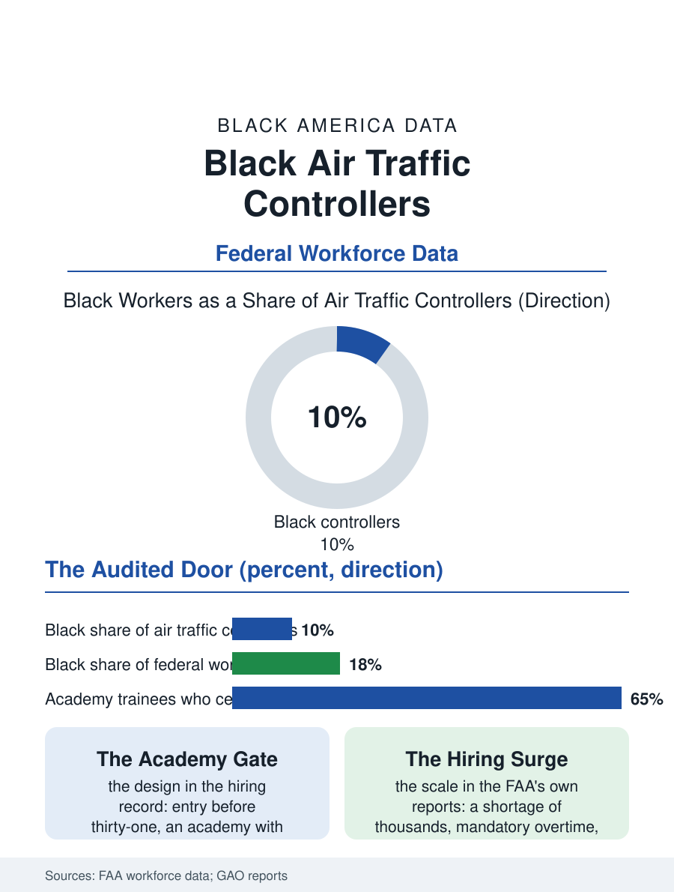

Black Employment
The Voice in the Headset: Black Air Traffic Controllers
Fewer than fifteen thousand controllers move America's air traffic through one of its most audited hiring funnels, and Black controllers hold about a tenth of the seats. The controller file.

Air traffic controllers hold one of the most selective jobs in the federal government: fewer than fifteen thousand of them move the nation's air traffic, hired through a competitive process with an age ceiling, a medical standard, and an academy in Oklahoma City that washes out a substantial share of every class. Black controllers hold roughly nine or ten of every hundred positions in the FAA's workforce data, a share built through the federal hiring channel and tested by the academy's attrition. This article reads the controller file.
The Federal Door and the Academy Gate
The hiring architecture is unlike anything else in this atlas. Controllers must enter before their thirty-first birthday, pass aptitude and medical screening, and survive the FAA Academy's pass-fail curriculum, after which years of on-the-job certification at an assigned facility, chosen by the agency's needs more than the trainee's preference, complete the making of a controller. Each stage writes demographic data. The aptitude testing has been the file's recurring controversy, with hiring instruments redesigned across the decades amid litigation and studies over their effects on the applicant pool's diversity, an argument conducted, unusually for this atlas, in public and in court, because the federal door's fairness is auditable in a way private hiring is not. The collegiate training initiative, which let aviation degree programs feed graduates toward the academy, built an HBCU chapter into the pipeline, several historically Black universities running air traffic programs whose graduates entered the queue with preparation the general public track does not provide. Academy attrition then applies its own filter: the washout rates are high for every group, the simulated radar problems are unforgiving, and the support structures around trainees, mentoring by working controllers, tutoring cohorts, measurably affect who finishes, making the academy a case study in the difference between a fair test and a fair preparation for it.
Towers, Centers, and a Workforce Under Strain
The occupation's internal geography runs from small contract towers to the great en-route centers and the terminal facilities of the busiest metros, with pay scaling steeply by facility complexity, so a controller's career earnings depend substantially on placement and mobility between facilities, a transfer system whose dynamics reward the unattached and the well-mentored. Black controllers are distributed across the system with concentrations in the Southeast and Mid-Atlantic facilities, reflecting both the service's history and the HBCU pipeline's geography. The workforce's present condition is strain: the FAA's own reports describe a controller shortage of thousands against authorized levels, mandatory overtime and six-day weeks at the short-staffed facilities, and a hiring surge whose demographics will define the occupation for thirty years, since controllers retire on a mandatory schedule at fifty-six, making the workforce a pure function of its hiring classes. The fatigue and staffing file intersects the safety record in the news, but the workforce file's point is the opportunity's scale: a six-figure federal career with a pension, reachable without a degree through the public track, hiring in volume for the first time in a generation, with an academy that decides everything in a few months in Oklahoma.
The Voice in the Headset
The controller's cultural footprint exceeds the headcount: the calm voice in the headset is one of the federal government's most trusted sounds, and Black controllers, several of whom have become the profession's public faces and union leaders, carry a representation weight the numbers alone would not suggest. The union, NATCA, functions in this occupation with unusual centrality, negotiating the staffing and fatigue rules and running mentorship into the academy classes, and its Black membership's organization within it mirrors the broader labor pattern of this atlas. The file's forward chapter is the hiring surge's composition. The applicant pool for the public announcements numbers in the tens of thousands for a few thousand seats, the aptitude and academy filters will do what they do, and the variables that decide the outcome are the preparation variables: who hears about the announcement in the short window it opens, who can afford months in Oklahoma on trainee pay, who finds the HBCU programs and the community college feeders, and who gets mentored through the academy's hardest weeks. The controller file closes on the scope screen, where the blips move at the speed of commerce and the voice never rises. It is among the most merit-audited workplaces in America, and its demographics are still written upstream, in the announcement's reach and the academy's support, which is this atlas's whole argument rendered in radar: the fair test at the end cannot repair the funnel at the beginning, and the funnel, unlike the test, belongs to everyone willing to work on it.
More in Black Employment
The Black Unemployment Rate: The Two-to-One Pattern
Black unemployment runs at roughly twice the White rate — 5.5 percent against 3.3 percent in annual averages — a ratio stable across five decades of federal data. How it is measured and why it persists.
Black Median Weekly Earnings: The 80-Cent Ratio
Black full-time workers earn a median of about $900 a week — roughly 80 cents for every dollar White workers earn. The BLS earnings data by group, gender, and occupation.
Black Labor Force Participation: Working at National Rates
Black labor force participation runs at roughly the national rate — and Black women participate at higher rates than White women. The BLS participation data.
Source: Federal Aviation Administration workforce and hiring data; Government Accountability Office reports on controller staffing and training.